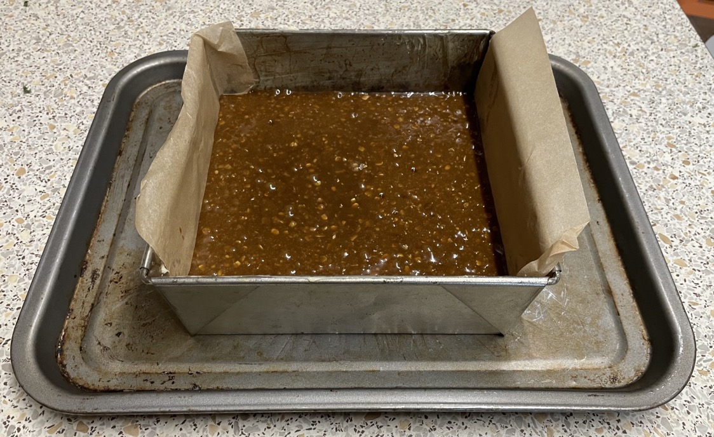

Parkin
- Heat gently in pan
- 225g unsalted butter
- 175g golden syrup
- 100g black treacle
- 85g light muscavado sugar
- Mix in bowl
- 250g plain flour
- 100g oatmeal
- 1 tbsp ground ginger
- 2 tsp bicarbonate of soda
- Combine butter and flour mixtures
- Mix separately
- Mix egg and milk into main mixture
- Pour into 3" tall 20 x 20cm tin lined with baking paper, with sides buttered
- Bake for 60 mins at 140°C, do not open oven or move tray
- Cool in tin for 1 hour
Serving
- Calories = 4180, 1/16 = 260
- 16 portions
Notes
- do not open oven while cooking or middle will collapse
- made: 25 Oct 2022
Pics
